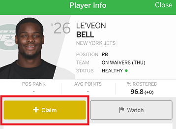
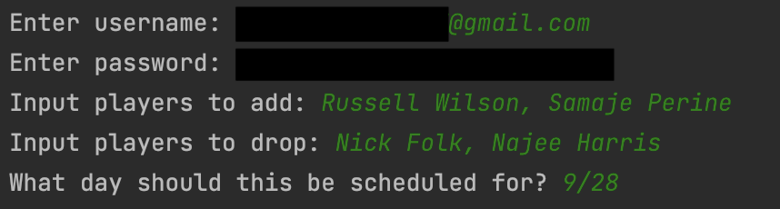
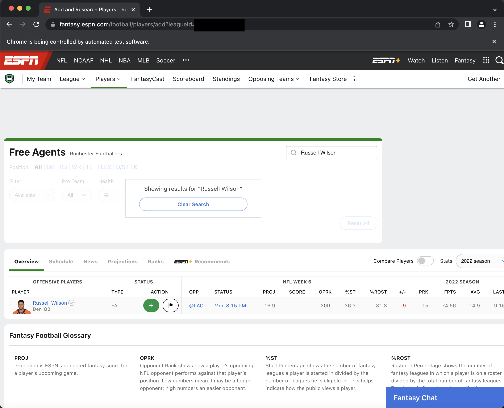

My obsession began when I first tried fantasy football as part of my office's fantasy football league in August of 2021. I had been a pretty avid Chargers fan as a child (I grew up in San Diego), but my fervor had decreased over the years, especially after the Chargers abandonded San Diego. But with the office league, a new opportunity to enjoy football appeared.
In my first league, your waiver position (when you get to claim recently played or dropped players) was entirely based on when you last claimed someone off waivers. Because of this, I frequently found myself getting up quite early the morning that waivers cleared to grab free agents immediately after waivers so I could preserve my waiver spot. It dawned on me at some point that this was pretty silly to be losing sleep over. Some might have decided to just not worry about it. But like any good programmer, I decided to write a little program to do it for me.
So I implemented a very basic program in Python that uses the ESPN API, to query to determine if the player is a free agent yet, and Selenium (testing software), to make the transaction by logging into a web browser. My progress on this project has slowed recently, because I realized that my league this year is structured so that waiver position is reset every week based on performance, meaning that there is no major advantage to preserving waiver position through free agent pickups. This was somewhat disappointing to learn, but this is probably the healthier way to conduct fantasy football. Despite this, I finished this tool so that others (whose leagues are structured differently) can use it.
